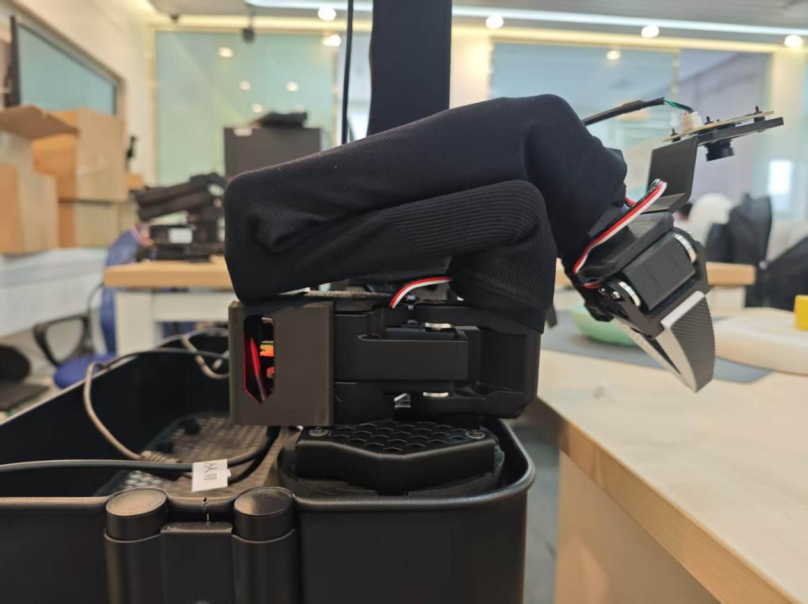
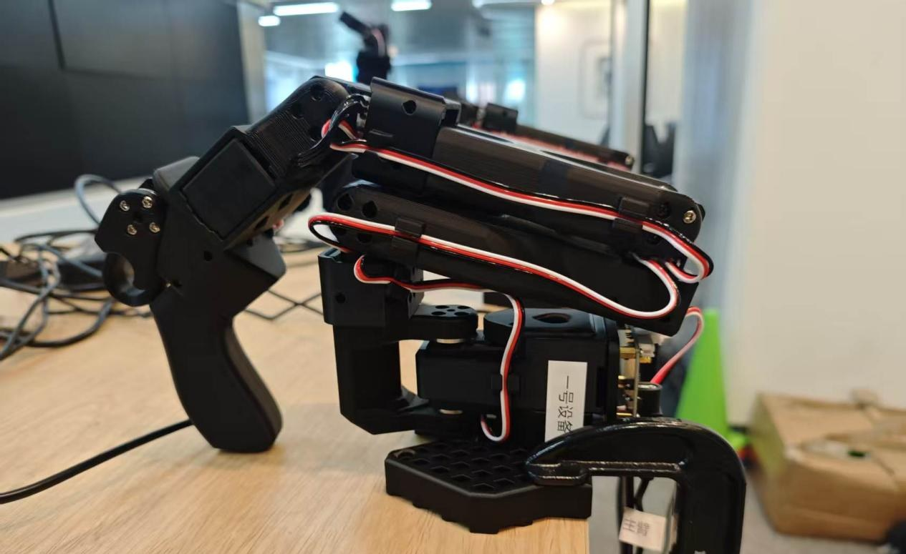
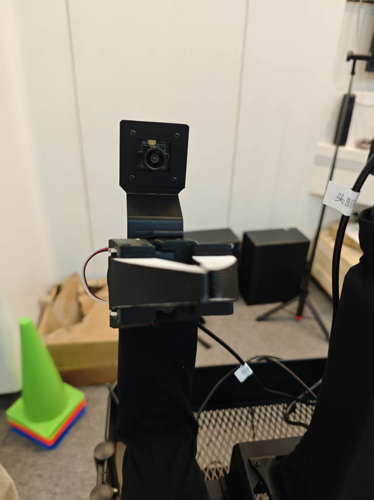
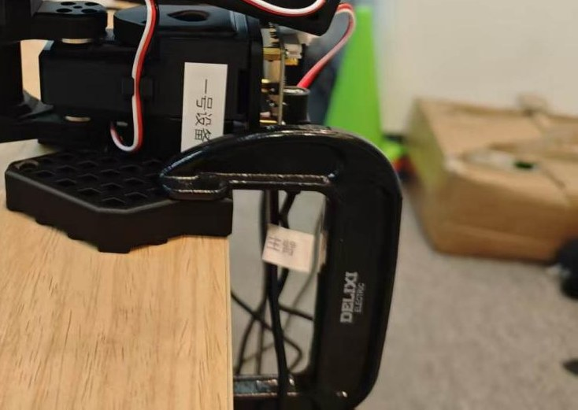
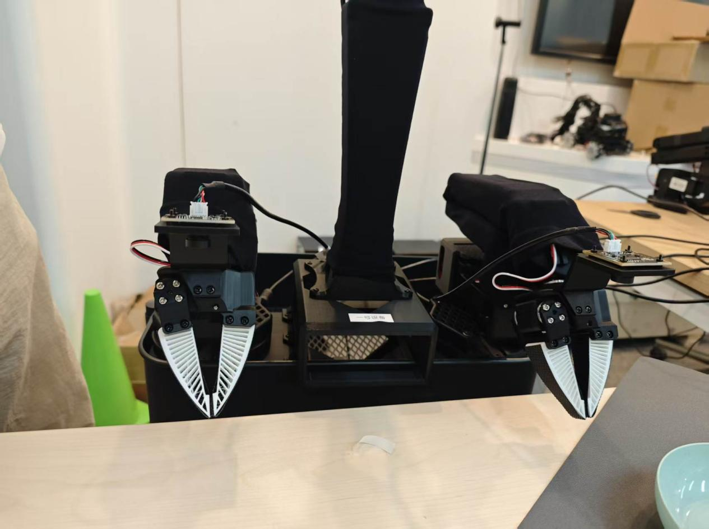
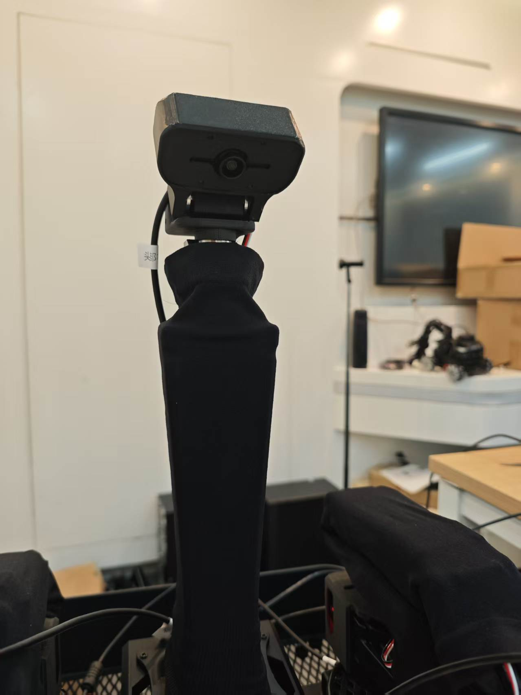

EXP-01 · 第 00/01 章 · 验证性 · 8 学时
主机环境搭建与硬件认知
这是整门课的"通电第一课"。你在一台 Ubuntu 22.04 主机上依次装好 NVIDIA 驱动、Miniconda、LeRobot 0.4.1，写入机械臂与相机的 udev 别名规则，再对照第 01 章认识从臂、主臂、摄像头三大件。做完本实验，ls /dev/arm_* 和 ls /dev/cam_* 应能列出全部 7 个设备名——这是后续三个实验一切操作的地基。
难度 ⭐ · 8 学时
Ubuntu 22.04LeRobot 0.4.1
udev 规则SO100 双臂 + 三摄像头
01学习目标
- 能说出 LZ-XL01 平台的三大硬件组成：从臂、主臂、摄像头，以及它们与主机的连接关系
- 能独立完成第 00 章十一步环境部署：驱动 → 源码 → Miniconda → VS Code → 镜像源 → Python 3.10 → LeRobot
- 能解释 udev 规则的作用并默写机械臂四条 + 相机三条别名规则的关键字段
- 能执行三条验证命令并读懂正常输出：python --version、ls /dev/arm_*、ls /dev/cam_*
- 建立"端到端"的硬件直觉：感知（摄像头）→ 决策（主机）→ 执行（机械臂）的闭环
02原理讲解：什么叫"端到端平台"
先打个比方：端到端（end-to-end）就像学炒菜不拆步骤——眼睛看到菜在哪（感知），大脑想怎么抓（决策），手直接伸过去（执行），中间不留"专门算坐标的模块、专门规划路径的模块"。具身智能的端到端策略也是这样：摄像头画面直接进模型，模型直接输出关节角度。而要让这条链路跑起来，先得把三个"端"物理连好：
1感知端：三路 USB 摄像头（左手 / 右手 / 头部）给系统提供画面
2决策端：Ubuntu 主机跑 LeRobot 与策略模型，是整个平台的"大脑"
3执行端：主臂（leader，被人牵着示范）与从臂（follower，跟着学）通过串口听主机指挥
为什么第 00 章要花大力气配 udev 规则？想想小区给快递柜编号：厂家给每块电路板烧了唯一"序列号"（serial），但 Linux 按插拔顺序把串口命名成 ttyACM0、ttyACM2……一重启顺序可能就变了。udev 规则就是"贴标签"：不管插哪个口，只要序列号是 5B79018622，系统就给它挂上 /dev/arm_master_right 这个永久别名。
03硬件与材料
LZ-XL01 平台由三路摄像头（感知端）＋ Ubuntu 主机（决策端）＋ 四条 SO100 机械臂（执行端）组成。下表按"角色—作用—关键依赖"把三大件拆开讲：
角色：被主臂带着示范、真正去抓取/操作
从臂装在底座上（连小推车），吃 12V 大幅供电，是端到端链路里"动手"的那一只。
| 接口 | USB 串口 · /dev/arm_slave_left / arm_slave_right |
|---|
| 关节 | SO100 六关节（Joint1~5 + 夹爪） |
|---|
| 供电 | 12V 8A（重载，举东西用） |
|---|
| 序列号 | 5B79019324（左） / 5B79018452（右） |
|---|
角色：被人手掰动、编码器读出角度传给从臂
主臂装在桌面（卡钳固定），被人手推着做动作，是"示教"的源头。
| 接口 | USB 串口 · /dev/arm_master_left / arm_master_right |
|---|
| 关节 | SO100 六关节（与从臂一一对应） |
|---|
| 供电 | 5V 2A（轻载，仅示范） |
|---|
| 序列号 | 5B61034506（左） / 5B79018622（右） |
|---|
角色：给系统提供画面，是"感知→决策→执行"的起点
左手 / 右手 / 头部各一路，直连主机固定端口，只为让画面永远知道自己来自哪个位置。
| 规格 | 640×480@30 · YUYV/MJPG |
|---|
| 接口 | USB 直连 · /dev/cam_left / cam_right / cam_head |
|---|
| 插口 | 主机背面端口 7 / 6 / 1（不可变动、不可走拓展坞） |
|---|
| 匹配 | 按 ID_PATH 写 udev 别名 |
|---|
▍实物对照：三大件长这样（来源：LZ-XL01 硬件指导文件）

(a) 从臂 follower · 执行端（末端为平行夹爪）

(b) 主臂 leader · 示范端（带握把，人手握持示教）

(c) USB 摄像头 · 感知端
▍安装位置与接口细节：主从臂怎么装、摄像头怎么架

(d) 主臂 · C 型卡钳旋转夹紧固定桌面边缘

(e) 从臂 · 连底座卡到小推车上

(f) 头部摄像头 · 架设于垂直立柱俯视工作区
◆ 一条口诀记三件硬件摄像头感知看 → 主机决策算 → 机械臂执行动。身份固定的关键字段：臂用序列号（serial），相机用端口位置（ID_PATH）——记住这两点，后面的 udev 规则就秒懂。
04步骤实践：四阶段、十一步搭起开发环境
环境搭建分四阶段推进：① 系统初始化（U 盘 / 驱动 / 拷贝）→ ② 软件栈（Miniconda / VS Code / LeRobot 依赖）→ ③ 设备认名（机械臂与相机的 udev 别名）→ ④ 验收（三重验证）。一页看完，命令编号与「05 关键命令」一一对应。
阶段 A · 系统初始化（步骤 1~3）
1插 U 盘：卷标 UBUNTU 22_0，插入后自动挂载到 /media/lz-xl01/UBUNTU 22_0/，里面装着安装包
2装 NVIDIA 驱动：sudo apt install nvidia-driver-595-open nvidia-settings nvidia-prime -y → sudo reboot 重启 → nvidia-smi 验证
3拷贝并解压源码：cd /home/lz-xl01/ 后 unzip lerobot-0.4.1.zip；U 盘若无 Miniconda 安装包，可 wget 联网下载
阶段 B · 软件栈（步骤 4~7）
4装 Miniconda：bash Miniconda3-latest-Linux-x86_64.sh -b 静默安装到 ~/miniconda3，再 conda init bash + source ~/.bashrc 使其生效
5装 VS Code：apt install wget gpg apt-transport-https → 导入微软 GPG 密钥 → 添加官方源 → apt install code -y
6配镜像 + 建环境：加清华 main / r / msys2 三通道并 show_channel_urls yes；conda create -n lerobot python=3.10 -y，随后 conda activate lerobot
7安装 LeRobot：cd ~/lerobot-0.4.1 → pip install --upgrade pip → pip install -e .（开发模式，命令后带清华源参数）
阶段 C · 设备认名（步骤 8~10）· udev 别名
8机械臂别名：写 /etc/udev/rules.d/99-lerobot-arms.rules（4 条，按序列号 5B61…/5B79… 定 arm_master/slave_left/right）→ usermod -aG dialout $USER
9相机别名：写 99-lerobot-cameras.rules（3 条，按 ID_PATH 端口 7/6/1 定 cam_left/right/head）→ usermod -aG video $USER
10重载生效：sudo udevadm control --reload-rules + sudo udevadm trigger（必须重启终端或注销重登，组权限才刷新）
阶段 D · 验收（步骤 11）
11三重验证：python --version → Python 3.10.x；ls /dev/arm_* → 列出全部 4 个别名；ls /dev/cam_* → 列出 cam_head / cam_left / cam_right
⚠ 顺序提醒驱动装完必须 sudo reboot 再验证 nvidia-smi；conda init bash 后必须 source ~/.bashrc；usermod 加组后需注销重登，否则当前会话权限不生效——四阶段顺序不可颠倒。
05关键命令
# ① 安装 NVIDIA 驱动并重启验证（第 00 章 二）
sudo apt update
sudo apt install nvidia-driver-595-open nvidia-settings nvidia-prime -y
# 完成后：sudo reboot，再执行 nvidia-smi 验证
# ② 解压源码 + 静默安装 Miniconda（第 00 章 三、四）
unzip lerobot-0.4.1.zip
bash Miniconda3-latest-Linux-x86_64.sh -b
~/miniconda3/bin/conda init bash && source ~/.bashrc
# ③ 创建环境并安装 LeRobot（第 00 章 七、八）
conda create -n lerobot python=3.10 -y
cd ~/lerobot-0.4.1
python3 -m pip install --upgrade pip -i https://pypi.tuna.tsinghua.edu.cn/simple
pip install -e . -i https://pypi.tuna.tsinghua.edu.cn/simple
# ④ 写入机械臂 udev 规则（4 条序列号别名，第 00 章 九）
sudo tee /etc/udev/rules.d/99-lerobot-arms.rules << 'EOF'
SUBSYSTEM=="tty", ATTRS{idVendor}=="1a86", ATTRS{idProduct}=="55d3",
ATTRS{serial}=="5B61034506", SYMLINK+="arm_master_left", GROUP="dialout", MODE="0660"
# 同样格式另写三条：5B79018622→arm_master_right 5B79019324→arm_slave_left 5B79018452→arm_slave_right
EOF
sudo usermod -aG dialout $USER
# ⑤ 写入相机 udev 规则（3 条端口别名，第 00 章 十）
sudo tee /etc/udev/rules.d/99-lerobot-cameras.rules << 'EOF'
SUBSYSTEM=="video4linux", ENV{ID_PATH}=="pci-0000:00:14.0-usb-0:7:1.0", ATTR{index}=="0", SYMLINK+="cam_left", GROUP="video", MODE="0660"
# 端口6→cam_right 端口1→cam_head 同理
EOF
sudo usermod -aG video $USER
# ⑥ 重载规则 + 三重验证（第 00 章 十一）
sudo udevadm control --reload-rules && sudo udevadm trigger
python --version # → Python 3.10.x
ls /dev/arm_* # → arm_master_left arm_master_right arm_slave_left arm_slave_right
ls /dev/cam_* # → cam_head cam_left cam_right
06动画讲解：主机 + 双臂 + 摄像头连接拓扑
下图是 LZ-XL01 平台的连接拓扑：主机居中，四条臂经串口、三路摄像头经 USB 汇入，udev 别名像"门牌号"一样把物理端口翻译成稳定设备名：
动画 1-1｜主机居中（决策端），左侧从臂、右侧主臂经 USB 串口汇入，下方三路摄像头直连，udev 规则负责把物理端口翻译成稳定别名；光点表示感知→决策→执行的数据闭环
07互动练习：udev 别名配对自测
规则记不住就来配对：点一个设备序列号/端口，再点你认为正确的别名，即时判分：
udev 配对小考 · 把"身份证"贴到"门牌号"上
// 先选上方一个"物理身份"，再选下方一个"别名"，配对成功会亮绿灯
提示：主臂右 5B79018622 / 主臂左 5B61034506 / 从臂左 5B79019324 / 相机左=USB 端口 7
08常见问题
- 装完驱动 nvidia-smi 找不到命令：忘了 reboot，或安装时没等 apt 完成就中断——重启后再验证
- conda: command not found：
conda init bash 后没执行 source ~/.bashrc，或没开新终端
- pip install 极慢/超时：确认命令带了
-i https://pypi.tuna.tsinghua.edu.cn/simple 清华源参数
- ls /dev/arm_* 提示 No such file：udev 规则没重载——
sudo udevadm control --reload-rules && sudo udevadm trigger 后重新插拔臂
- 摄像头别名不生成：相机必须插在规则里写死的端口（7/6/1），插错口 ID_PATH 对不上
- 登录组不生效：usermod 加组后必须注销重新登录（或重启），当前会话不刷新
💡 排障口诀先验驱动、再验环境、后验别名：nvidia-smi → python --version → ls /dev/arm_* /dev/cam_*，哪一步断了修哪一步，别跳着查。
09拓展挑战
🚀 挑战一：给第五条臂起名若再接入一条从臂，序列号为自选值，请仿照第 00 章格式写出它的 udev 规则行（SUBSYSTEM=="tty" … SYMLINK+="arm_slave_mid"），说明 idVendor/idProduct 为什么仍填 1a86/55d3，以及如何用 udevadm info 查出新臂序列号。
🚀 挑战二：画出你的接线台账把四条臂的序列号、对应别名、USB 实际插口、相机三路端口画成一张表格贴在工位上——装机阶段这张表能省掉 80% 的"哪个是哪个"。
10思考题
📝 思考题 1udev 规则用 ATTRS{serial} 匹配机械臂、却用 ENV{ID_PATH} 匹配相机。为什么两类设备选用不同匹配字段？（提示：相机的多个 video 设备共享同一个 USB 序列信息吗？插口位置对相机为什么反而更重要？）
📝 思考题 2指导文档提示"每次重启端口号可能会变化"。假如不做 udev 规则、每次启动都用 /dev/ttyACM0 这种动态名，会把后面哪个实验（组装找口？校准带 port 参数？遥操作命令？）埋下什么样的坑？逐一推演说明。